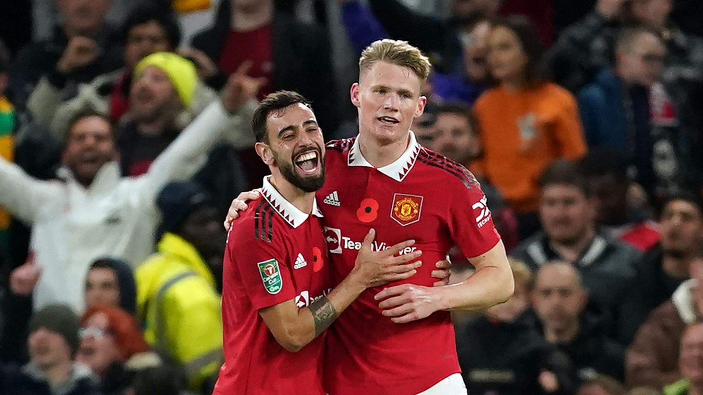

United Vs Aston Villa: 4-2
Manchester United's first game of the Carabao Cup in the 2022/23 season was against Premier League side Aston Villa. United had just come off of a 3-1 defeat to Villa in the league. After a poor run of form under Steven Gerrard, Gerrard was sacked and new manager Unai Emery was brought in to Villa. The new manager buzz definitley played a factor in Villa defeating the in-form Manchester United side. The Carabao Cup game took place on November 10th 2022. After a lackluster first half with no goals from either side, Villa opened the scoring in the 48th minute with a goal from Ollie Watkins. It did not take United long to hit back however, with Anthony Martial scoring just over a minute later, making the scoreline 1-1. In the 61st minute, a poorly timed block from Diogo Dalot lead to an own goal, making it 2-1 to Villa. In minute 67, a magnificent strike from Manchester United's top scorer thusfar this year, Marcus Rashford, levelled the playing field once again.In the 78th minute, a bad pass out from the Villa keeper led to United midfielder Bruno Fernades finding the ball and putting it in the back of the next. This had been an exciting game filled with twists and turns so United were not out of the woods yet. However, in the 91st minute just before the end, a wonderfully timed long shot from young winger Alejandro Garnacho led to midfielder Scott McTomminay finding the ball and scoring. This sealed victory for Manchester United and meant they would go on to the next round of the competition.
